The Tuol Sleng Genocide Museum. This former high school in Phnom Penh was taken over by Pol Pot's security forces in 1975 and turned into a prison known as S-21 and was soon the largest centre of detention and torture in the country.
Seán meets Chum Mey who is only one of seven survivors of the prison. He was spared from execution, following two years of torture, because of his skills as a mechanic and able to repair a typewriter. He witnessed the killing of his wife and young son.
Like the Nazis, the Khmer Rouge were meticulous in keeping records of their barbarity. Each prisoner who passed through S-21 was photographed, sometimes before and after torture. The long corridors contain haunting photographs of the victims, their faces staring eerily from the past.
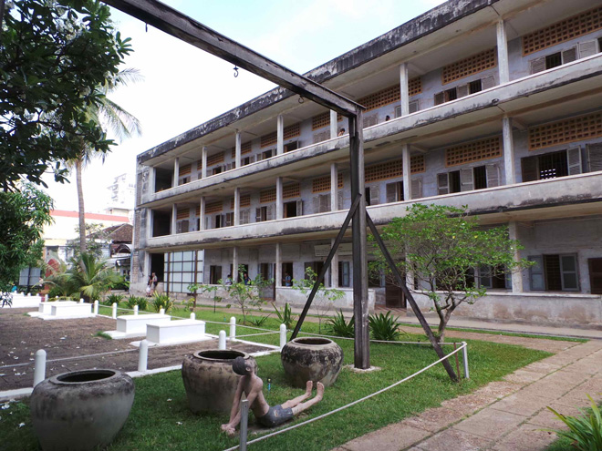
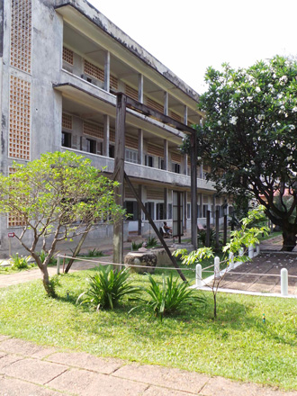
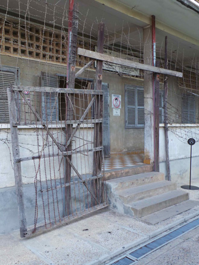
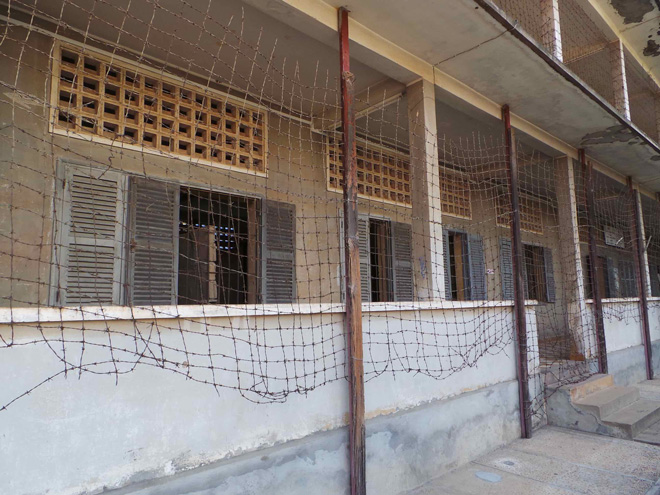
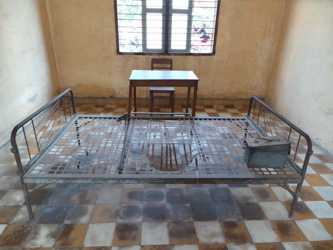
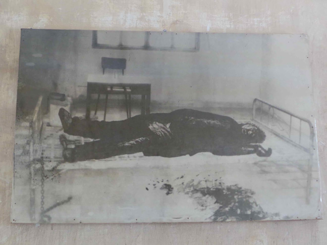
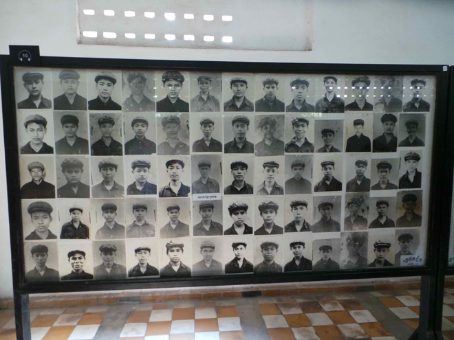
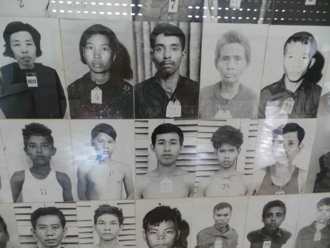
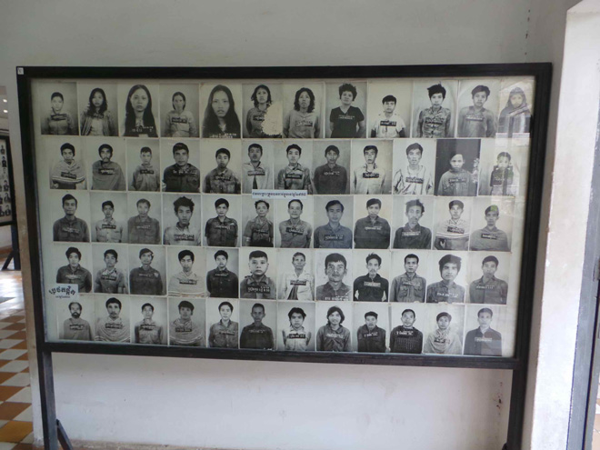
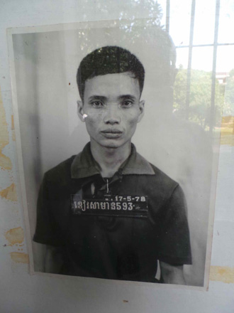
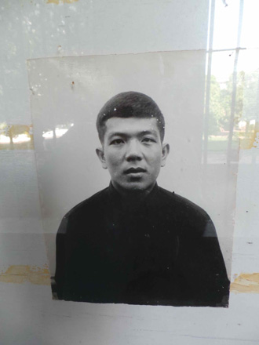
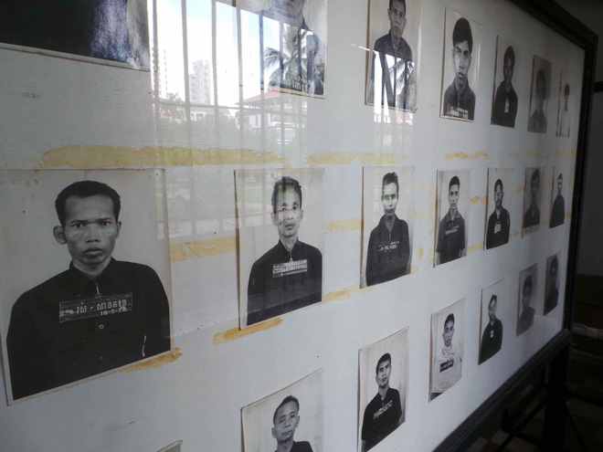
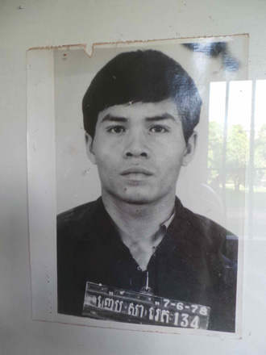
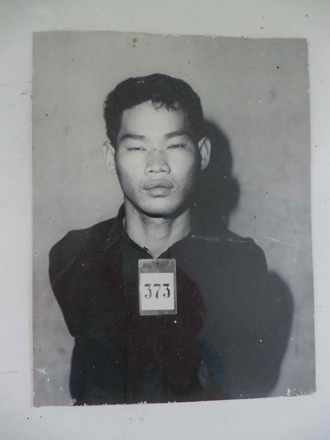
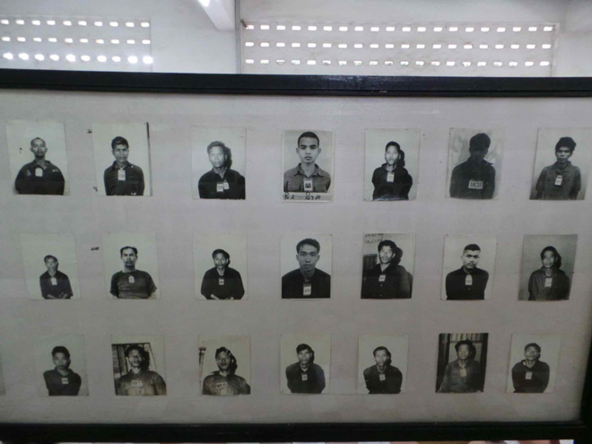
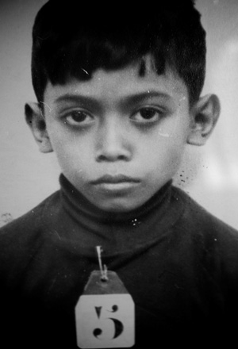
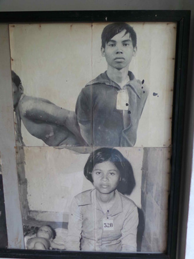
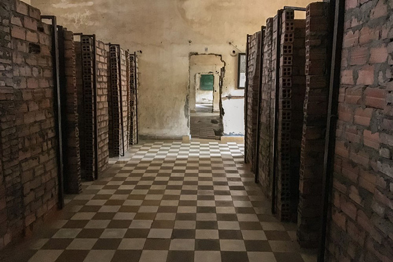
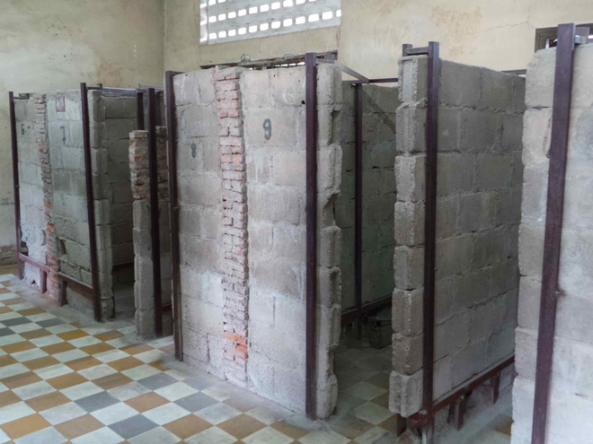
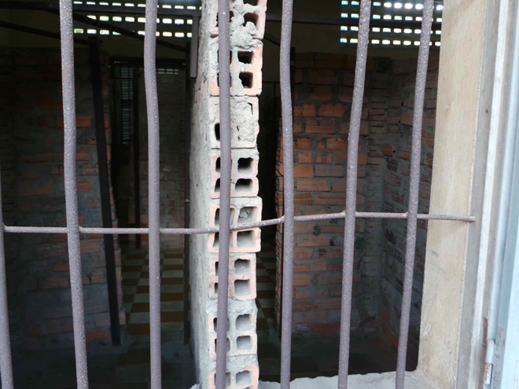
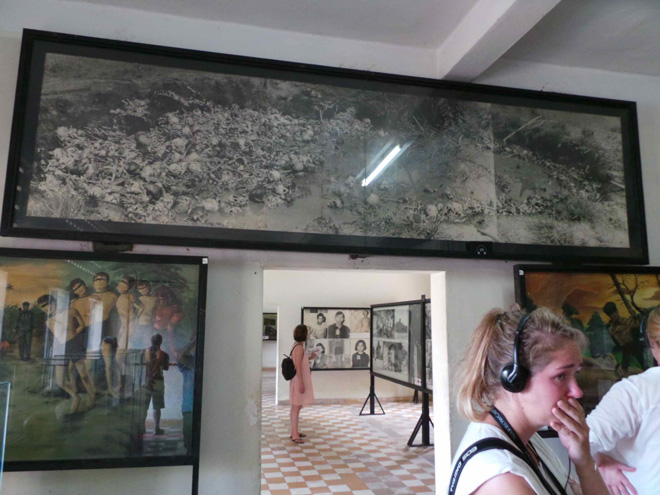
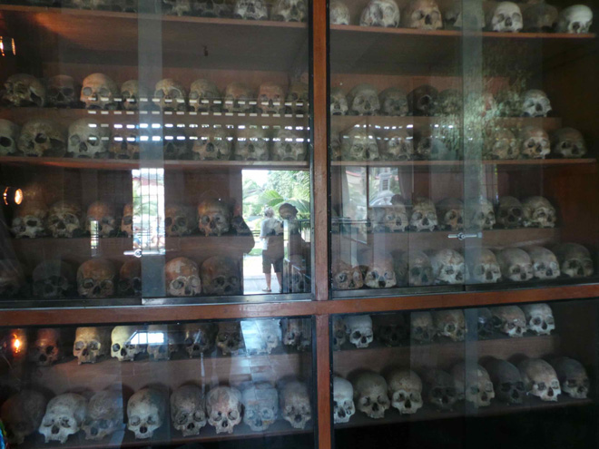
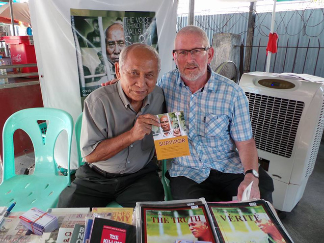
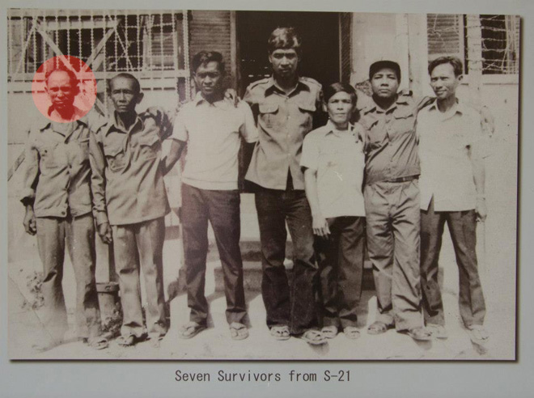